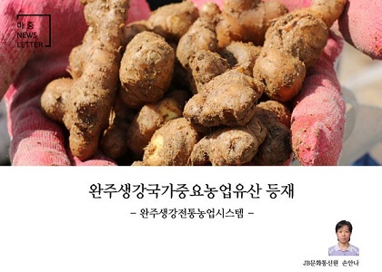
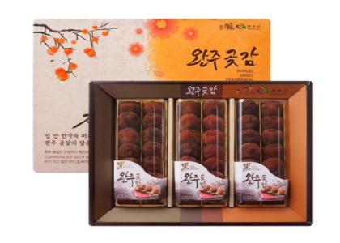
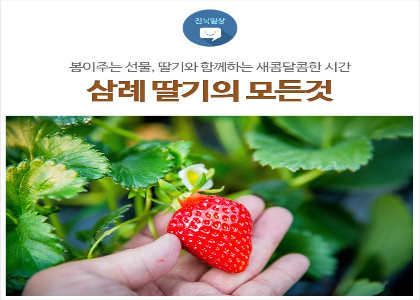

-

완주생강은 한국 생강농업의 대명사이다.
봉동읍을 중심으로 1,000년 이상 유지되어온 완주 생강농업은 전통적인 재배기술과 온돌식 생강굴의 가치를 인정받아 2018년 국가중요농업유산 제13호로 지정되었다.
완주의 농부들은 1,000년의 세월 동안 지역풍토에 적응한 토종생강을 지키고 있으며, 농업문화의 전승에 기여해왔다.
봉동에서는 귀한 손님을 대접할 때 생강의 가느다란 뿌리인 강수를 넣어 매운탕을 끓이고 생강차로 원기를 돋아주었으며, 돌아갈 때 편강을 들려 보냈다.
-

완주군의 동상면 대아리는 주위에 모악산 일대 해발 300m~700m 고지대 산악지역으로 밤과 낮의 기온 차가 크고 서늘한 가을바람과 풍성한 가을 햇살의 높은 일조량 등 곶감을 생산하기 천혜의 자연조건을 갖추고 있다.
완주군은 최근 곶감 생산에 최적지인 지리적 특수성으로 인해 동상면·운주면·경천면에 대단위 곶감 생산 단지가 조성되었고 ‘운장산의 씨 없는 곶감’은 완주군의 특산품으로 자리 잡았다.
곶감 관련 행사는 운주면에서 열리는 완주곶감축제가 대표적이다.
완주곶감축제 기간 중 명품 완주곶감을 시중보다 25% 저렴하게 구입할 수 있는 직거래 장터와 완주로컬푸드로 꾸며진 농특산물 판매장, 먹거리 장터도 운영되었다.
-

완주군 삼례읍에 사는 서승완은 삼례딸기의 역사적인 인물로 딸기 재배의 최적 조건을 완성했다.
삼례에서 품질 좋은 딸기를 재배하기 위해 일본을 오가며 선진 딸기 재배법을 배웠으며, 경남 진주에서 딸기 전문가로 통하는 김중길 원예연구 박사를 찾아가 기술을 습득했다.
이때 지하수 물로 온도를 유지하는 ‘수막재배법’의 신기술을 배워 삼례딸기의 기틀을 마련했고, 완주 8품 특산물로도 인정받으면서 그 유명세가 알려졌다.
이후 딸기가 돈이 된다는 소문이 퍼지자 삼례 들판은 벼 대신 딸기밭으로 물들어갔다.
딸기의 재배 면적이 늘면서 삼례에서 딸기를 주업으로 귀농하는 사람들도 증가하고 있다.
1999년부터 삼례읍은 삼례딸기의 우수성을 알리고자 매년 봄에 삼례딸기축제를 개최하고 있다.